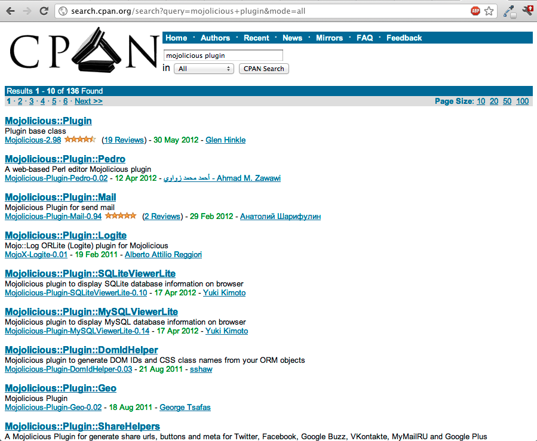

Hello!
Diego Kuperman
@freekey
https://github.com/diegok
https://metacpan.org/author/DIEGOK
use Mojolicious::Lite;
get '/' => sub {
shift->render( json => {
title => 'Mojolicious',
subtitle => [
'The web in a box',
'Duct Tape For The HTML5 Web'
],
where => 'Barcelonai.pm',
when => '28/06/2012',
who => 'diegok / @freekey'
});
};
app->start;Mojolicious
What's in the box?
- Full framework (client and server)
- Mojo::UserAgent (client)
- Mojolicious::Lite (micro)
- Mojolicious (full)
- No dependencies besides perl 5.10
Mojolicious
Bleeding edge
- Non-blocking events
- Concurrent requests
- Websockets
- IPv6
Mojolicious
No more than the web in the box
- model agnostic
- validation agnostic
- minimal core
- CPAN lover
Mojolicious
Clean, well tested and well documented code
- < 10k LOC
- ~ 17k lines of tests
- ~ 9k unit tests
- Not a feature until it's well tested

Mojolicious
The box

Install
$ curl get.mojolicio.us | sh
Install from CPAN
$ cpanm Mojolicious
--> Working on Mojolicious
Fetching http://www.cpan.org/authors/id/T/TE/TEMPIRE/Mojolicious-2.98.tar.gz ... OK
Configuring Mojolicious-2.98 ... OK
Building and testing Mojolicious-2.98 ... OK
Successfully reinstalled Mojolicious-2.98
1 distribution installed
Client
Mojo::UserAgent
Async IO HTTP 1.1
WebSocket Client
+
Mojo::DOM
HTML5 DOM parser
CSS3 selectors
Mojo::UserAgent
my $ua = Mojo::UserAgent->new;
# Grab the Mojolicious homepage :)
$ua->get('http://mojolicio.us')->res->body;
# Quick JSON request
$ua->get('http://search.twitter.com/search.json?q=mojolicious')
->res->json->{results}[0]{text};Mojo::UserAgent
Scrap!
# Mojolicious - Perl real-time web framework
say $ua->get('mojolicio.us')
->res->dom->at('title')->text;Mojo::UserAgent
Scrap!
# Scrape the latest headlines
$ua->get('http://digg.com')->res
->dom('h3.story-item-title > a')
->each(sub { say shift->text });Mojo::UserAgent
Form POST
# Form post with exception handling
my $tx = $ua->post_form(
'http://search.cpan.org/search'
=> { q => 'mojo' }
);
if (my $res = $tx->success) {
say $res->body;
}
else {
my ($message, $code) = $tx->error;
say "Error: $message ($code)";
}Mojo::UserAgent
Parallel requests
my $ua = Mojo::UserAgent->new;
my $cb = sub { print pop->res->body };
$ua->get('http://mojolicio.us' => $cb);
$ua->get('http://search.cpan.org' => $cb);
Mojo::IOLoop->start;Mojo::UserAgent
Blocking parallel requests
my $delay = Mojo::IOLoop->delay;
for my $url ('mojolicio.us', 'cpan.org') {
$delay->begin;
$ua->get($url => sub {
my ($ua, $tx) = @_;
$delay->end(
$tx->res->dom->at('title')->text
);
});
}
my @titles = $delay->wait;Mojo::UserAgent
Non-blocking WebSocket connection
$ua->websocket('ws://ws.org:8787' => sub {
my ($ua, $tx) = @_;
$tx->on(finish => sub { say 'WS closed!' });
$tx->on(message=> sub {
my ($tx, $message) = @_;
say "WebSocket message: $message";
$tx->finish;
});
$tx->send('hi there!');
});
Mojo::IOLoop->start unless Mojo::IOLoop->is_running;Commandline client
mojo get
Commandline
$ mojo get http://barcelonaonrails.com
<!DOCTYPE html PUBLIC "-//W3C//DTD XHTML 1.0 Transitional//EN"
"http://www.w3.org/TR/xhtml1/DTD/xhtml1-transitional.dtd">
...
$ mojo get http://barcelonaonrails.com title
<title> Barcelona on Rails</title>
$ mojo get http://barcelonaonrails.com title text
Barcelona on Rails
$ mojo get http://barcelonaonrails.com 'h1 span'
<span>Barcelona on Rails</span>
$ mojo get http://twitter.com/search.json?q=mojo '/completed_in'
0.024
Commandline
$ mojo get -v http://barcelonaonrails.com title
GET / HTTP/1.1
User-Agent: Mojolicious (Perl)
Content-Length: 0
Host: barcelonaonrails.com
HTTP/1.1 200 OK
Connection: keep-alive
Cache-Control: max-age=0, private, must-revalidate
Status: 200 OK
Transfer-Encoding: chunked
Date: Wed, 20 Jun 2012 21:45:34 GMT
X-UA-Compatible: IE=Edge,chrome=1
ETag: "0d78276580a9f5a5d3d836122902786b"
X-Runtime: 0.034635
Content-Type: text/html; charset=utf-8
Server: nginx
<span>Barcelona on Rails</span>
Debug Mojo::UserAgent
MOJO_USERAGENT_DEBUG=1
Mojolicious::Lite
Microframework / Lite framework
Full power!
Mojolicious::Lite
- One file
- Getting started
- Prototyping
- Small apps
- Embed
Commandline helper
$ mojo generate lite_app hello
[exist] /mojo_talk/examples
[write] /mojo_talk/examples/hello
[chmod] hello 744
hello (1/2)
#!/usr/bin/env perl
use Mojolicious::Lite;
# Documentation browser under "/perldoc"
plugin 'PODRenderer';
get '/' => sub {
my $self = shift;
$self->render('index');
};
app->start;
# ...hello (2/2)
__DATA__
@@ index.html.ep
% layout 'default';
% title 'Welcome';
Welcome to the Mojolicious real-time web framework!
@@ layouts/default.html.ep
<!DOCTYPE html>
<html>
<head><title><%= title %></title></head>
<body><%= content %></body>
</html>Routes inspection
$ ./hello routes
/perldoc/*module * perldocmodule
/ GET
Run
$ morbo hello
Server available at http://*:3000.
Other hello app
#!/usr/bin/env perl
use Mojolicious::Lite;
get '/' => sub {
shift->render( text => 'Hello World!' )
};
get '/hello/:name' => \&hello;
post '/hello' => \&hello;
sub hello {
my $self = shift;
my $name = $self->param('name');
$self->render_text("Hello $name!");
};
app->start;Routes with names
$ ./hello routes
/ GET
/hello/:name GET helloname
/hello POST hello
Route placeholders
# all but / and .
get '/:capture/foo' => \&show;
# all but /
get '/#capture/hello' => \&show;
# all
get '/hello/*capture' => \&show;
sub show { shift->render('groovy') };
__DATA__
@@ groovy.html.ep
Got from route: <%= $capture %>.HTTP methods
get '/bye' => sub { };
post '/bye' => sub { };
any [qw/get post delete/] => '/bye' => sub {
shift->render( text => 'bye!' )
};
any '/baz' => sub {
my $self = shift;
my $method = $self->req->method;
$self->render(
text => "You called /baz with $method"
);
};Just router helpers
get '/foo/:bar' => sub {
my $self = shift;
my $bar = $self->param('bar');
$self->render( text => "Hello $bar!" );
};The real mojo
app->routes->route('/foo/:bar')
->via('get')
->to(cb => sub {
my $self = shift;
my $bar = $self->param('bar');
$self->render(
text => "Hello $bar!"
);
});Route Constraints
# /* (digits)
any '/:foo' => [foo => qr/\d+/] => sub {
my $self = shift;
my $foo = $self->param('foo');
$self->render_text("Got: $foo");
};
# /* (everything else)
any '/:bar' => [bar => qr/.*/] => sub {
my $self = shift;
$self->render_json({
got => $self->param('bar')
});
};Optional placeholder
with default value
# /hello/*
get '/:name' => {name=>'world!'} => sub {
my $self = shift;
my $name = $self->param('name');
$self->render( text => "Hello $name" );
};Conditions
# /foo
get '/foo' => (agent => qr/Firefox/)
=> sub {
shift->render(
text => 'You are using a cool browser!'
);
};
# /foo
get '/foo' => (agent => qr/Internet Explorer/)
=> sub {
shift->render(
text => 'You need to upgrade your browser!'
);
};All together...
# /everything/*?name=*
get '/everything/:stuff'
=> [stuff => qr/\d+/]
=> {stuff => 23} => sub {
shift->render('welcome');
};
__DATA__
@@ welcome.html.ep
Stuff is <%= $stuff %>.
Query param name is <%= param 'name' %>.under
under sub => {
# return true or false
};# Authenticate based on name parameter
under sub {
my $self = shift;
my $name = $self->param('name') || '';
return 1 if $name eq 'Bender';
$self->render('denied');
return;
};
# GET / (with authentication)
get '/' => 'index';
app->start;
__DATA__;
@@ denied.html.ep
You are not Bender, permission denied!
@@ index.html.ep
Hi Bender!use Mojolicious::Lite;
# /foo
under '/foo';
# GET /foo/bar
get '/bar' => sub {
shift->render(text => 'bar!')
};
# GET /foo/baz
get '/baz' => sub {
shift->render(text => 'baz!')
};
app->start;EP Templates
Templates
.ep
<% Inline Perl %>
<%= perl expression as "scaped XML" %>
<%== Raw perl expression %>
<%# Comment, useful for debugging %>
% Perl line
%= Perl expression line, XML escaped result
%== Perl expression line, raw result
%# Comment line, useful for debuggingTemplates
.ep
<% for my $framework (@$frameworks) { %>
<%= $framework %> by <%= $author %>.
<% } %>
<% while (my ($app, $desc) = each %$hr) { %>
<%= $app %> is a <%= $description %>.
<% } %>Template plugins
- MojoX::Renderer::TT
- MojoX::Renderer::Mason
- MojoX::Renderer::Xslate
- MojoX::Renderer::Alloy
- MojoX::Renderer::YAML
- MojoX::Renderer::XSLT
- MojoX::Renderer::HAML
Helpers
Mojolicious::Plugin::DefaultHelpers
app config content
content_for current_route
dumper extends flash
include layout memorize
param session stash
title url_for url_with
stash, param & dumper
get '/bar' => sub {
my $self = shift;
$self->stash(one => 23);
$self->render('baz', two => 24);
};
__DATA__
@@ baz.html.ep
The magic numbers are <%= $one %> and <%= $two %>.
<%= param 'name' %>
<%= stash 'one' %>
<%= dumper [1, 2, 3] %>Mojolicious::Plugin::TagHelpers
base_tag check_box file_field
form_for hidden_field image input_tag
javascript link_to password_field
radio_button select_field
stylesheet submit_button t tag
text_field text_area
Tag Helpers
Mojolicous::Plugin::TagHelpers
%= tag 'div';
<%= t 'div', id => 'foo' %>
<%= t div => begin %>Content<% end %>
%= image '/images/foo.png', alt => 'Foo'
<%= javascript 'script.js' %>
<%= stylesheet 'foo.css' %>
<%= form_for login => begin %>
%= text_field 'first_name';
%= check_box employed => 1, id => 'foo';
%= submit_button;
<% end %>Tag Helpers (cont.)
Mojolicous::Plugin::TagHelpers
<%= link_to Home => 'index' %>
<%= link_to index => {foo => 'bar'}, class => 'links' => begin %>
Home
<% end %>
<%= link_to '/file' => begin %>File<% end %>
<%= link_to url_with->query([page => $cur++]) => begin %>Next<% end %>Helpers creation
helper mydump => sub {
my ( $self, @values ) = @_;
Data::Dumper->new(\@values)->Dump;
};Plugin creation
package Mojolicious::Plugin::MyDump;
use base 'Mojolicious::Plugin';
sub register {
my ($self, $app) = @_;
$app->helper(mydump => sub {
my ( $self, @values ) = @_;
Data::Dumper->new(\@values)->Dump;
});
}
1;Core plugins
are very good examples
Mojolicious::Plugin::Mount
# Mojolicious
my $route = $self->plugin(Mount => {
'/prefix' => '/apps/myapp.pl'
});
# Mojolicious::Lite
my $route = plugin Mount => {
'/prefix' => '/apps/myapp.pl'
};Plugins on CPAN

Session
Client side
Signed cookie
Session
app->secret('my super secret ftw!');
under sub {
if ( $self->session('user') ) {
return 1;
}
elsif ( my $user = $self->param('u') ) {
$self->session(user => $user);
return 1;
}
return 0;
}Commandline / Oneliners
ojo
ojo.pm
Instant lite_app
$ perl -Mojo -e 'a("/" => {text => "Hello!"})->start' daemon
ojo.pm
Instant lite_app
$ perl -Mojo -e 'a("/" => {text => "Hello!"})->start' get /
ojo.pm
a => Mojolicious::Lite
b => Mojo::ByteStream
c => Mojo::Collection
d => DELETE
f => POST form
g => GET
h => HEAD
o => OPTIONS request
p => POST
t => PATCH
u => PUT
x => Mojo::DOMhttp://mojolicio.us/perldoc?ojo
Async examples
Websockets
websocket '/echo' => sub {
my $self = shift;
$self->on(message=>sub {
my ($self, $message) = @_;
$self->send_message("echo: $message");
});
};Client inside
use Mojolicious::Lite;
# Scrape information from remote sites
get '/title-from' => sub {
my $self = shift;
my $url = $self->param('url')
|| 'http://mojolicio.us';
$self->ua->get($url => sub {
my $dom = pop->res->dom;
$self->render_text(
$dom->at('title')->text
);
});
$self->render_later;
};
app->start;Mojolicious::Plugin::Proxy
use Mojolicious::Lite;
plugin 'proxy';
get '/' => sub {
shift->proxy_to('http://mojolicio.us/')
};
app->start;Testing
Test::Mojo
( Mojo::UserAgent + Mojo::DOM )
use Test::More tests => 12;
use Test::Mojo;
my $t = Test::Mojo->new('MyApp');
$t->get_ok('/welcome')
->status_is(200)
->text_is('div#message' => 'Hello!');
$t->post_form_ok('/search.json' => {q => 'Perl'})
->status_is(200)
->header_is('X-Powered-By' => 'Mojolicious (Perl)')
->header_isnt('X-Bender' => 'Bite my shiny metal ass!');
->json_is('/results/4/title' => 'Perl rocks!');
$t->websocket_ok('/echo')
->send_ok('hello')
->message_is('echo: hello')
->finish_ok;Mojolicious
App
$ mojo generate app MyApp
[mkdir] /.../my_app/script
[write] /.../my_app/script/my_app
[chmod] my_app/script/my_app 744
[mkdir] /.../my_app/lib
[write] /.../my_app/lib/MyApp.pm
[mkdir] /.../my_app/lib/MyApp
[write] /.../my_app/lib/MyApp/Example.pm
[mkdir] /.../my_app/t
[write] /.../my_app/t/basic.t
[mkdir] /.../my_app/log
[mkdir] /.../my_app/public
[write] /.../my_app/public/index.html
[mkdir] /.../my_app/templates/layouts
[write] /.../my_app/templates/layouts/default.html.ep
[mkdir] /.../my_app/templates/example
[write] /.../my_app/templates/example/welcome.html.ep
.
|-- lib
| |-- MyApp
| | `-- Example.pm
| `-- MyApp.pm
|-- log
|-- public
| `-- index.html
|-- script
| `-- my_app
|-- t
| `-- basic.t
`-- templates
|-- example
| `-- welcome.html.ep
`-- layouts
`-- default.html.epController
package MyApp::Example;
use strict;
use warnings;
use base 'Mojolicious::Controller';
# This action will render a template
sub welcome {
my $self = shift;
# Render template "example/welcome.html.ep" with message
$self->render(message => 'Welcome perl6!');
}
1;lib/MyApp/Example.pm
App context and startup
package MyApp;
use strict; use warnings;
use base 'Mojolicious';
sub startup {
my $self = shift;
$self->plugin('pod_renderer');
# Routes
my $r = $self->routes;
$r->route('/welcome')
->to('example#welcome', id => 1);
}
1;lib/MyApp.pm
Deployment

Mojo::Server::Hypnotoad
Mojo::Server::Hypnotoad is a full featured UNIX optimized preforking non-blocking I/O HTTP 1.1 and WebSocket server built around the very well tested and reliable Mojo::Server::Daemon with IPv6, TLS, libev and hot deployment support that just works.
All glory to the hypnotoad
start
$ hypnotoad hello
All glory to the hypnotoad
Hot restart
$ hypnotoad hello
Starting hot deployment for Hypnotoad server 31912
All glory to the hypnotoad
stop
$ hypnotoad -s hello
Stopping Hypnotoad server 31954 gracefully.
INT, TERM
Shutdown server immediately
QUIT
Shutdown server gracefully.
TTIN
Increase worker pool by one.
TTOU
Decrease worker pool by one.
USR2
Attempt zero downtime software upgrade (hot deployment) without losing any incoming connections.
PSGI
Automatic detection
Heroku
Deploy on Heroku
$ cpanm Mojolicious::Command::generate::heroku
...
$ ./my_app deploy heroku -c
...
...
-----> Launching... done, v4
http://pure-love-4.herokuapp.com deployed to Heroku
Docs, tutorials, community...
http://mojolicio.us/perldoc
https://github.com/kraih/mojo/wiki
http://mojocast.com
#mojo on irc.perl.org
Questions?